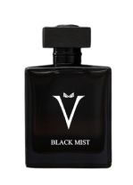
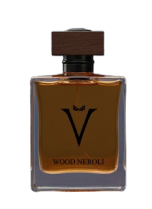

Black Mist
Una fragancia intensa y misteriosa, pensada para las noches. Combina notas de cuero, incienso y pimienta negra sobre un fondo amaderado que se siente en cada gota.
ConsultarPerfumes de autor pensados para quienes no pasan desapercibidos.
Mont Valdor nació de la idea de que un perfume no es solo un aroma, sino una forma de presentarse ante el mundo. Cada fragancia de la colección combina ingredientes seleccionados con un diseño de frasco pensado para durar en el tiempo, tanto en el recuerdo como en el tocador.
Ver la colecciónMont Valdor comenzó como un proyecto pequeño de perfumería artesanal y con el tiempo se convirtió en una marca reconocida por su estilo sobrio y elegante. Cada lanzamiento se piensa como una edición cuidada, no como un producto masivo.
Trabajamos con esencias naturales combinadas con notas amaderadas y especiadas, buscando siempre un equilibrio entre intensidad y sutileza que acompañe distintos momentos del día.

Una fragancia intensa y misteriosa, pensada para las noches. Combina notas de cuero, incienso y pimienta negra sobre un fondo amaderado que se siente en cada gota.
Consultar
Fresca y marina, inspirada en la profundidad del mar. Abre con cítricos y sal marina y deja un fondo de almizcle limpio, ideal para el día a día y para el verano.
Consultar
Cálida y elegante, mezcla la madera de cedro con la delicadeza de la flor de neroli. Un aroma suave pero con carácter, perfecto para ocasiones especiales.
Consultarde trayectoria en el desarrollo de fragancias de autor.
seleccionados de proveedores especializados en perfumería fina.
frascos numerados que no vuelven a producirse una vez agotados.
Si te interesa la historia y la composición de las fragancias, podés visitar el artículo de Wikipedia sobre el perfume para conocer más sobre su origen y elaboración.
Leer más en Wikipedia →¿Querés conocer más sobre alguna fragancia o hacer un pedido? Escribinos y te respondemos a la brevedad.
contacto@montvaldor.com